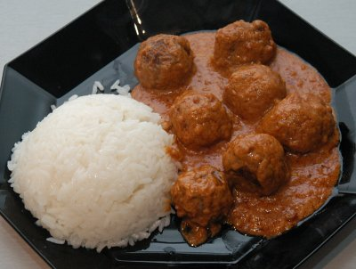

| Zutaten für 4 Personen: | |
| 500 g | gehacktes Rindfleisch |
| Salz | |
| Pfeffer aus der Mühle | |
| 1/2 Tasse | Mehl |
| 2 El | Pflanzenöl |
| 2 El | rote Currypaste |
| 12 | Erdnüsse |
| Kokosmilch (Dose) | |
| 1 Tl | Zucker |
| einige Tropfen | Nampla Sauce (thailändische Gewürzsauce aus fermentierten Fischen) |
Hackfleisch mit Salz und Pfeffer würzen und zu kleinen Kugeln formen. Im Mehl wenden und im heissen Öl, unter rotierendem Bewegen der Bratpfanne rundum anbräunen. Aus der Pfanne nehmen und zugedeckt warm stellen.
Für die Sauce Erdnüsse, 2 El Kokosmilch und Zucker im Mörser zu einer Paste verarbeiten. Currypaste im restlichen Öl der Bratpfanne während rund 2 Minuten unter Rühren anbraten; Erdnusspaste zufügen und zusammen mit etwas Kokosmilch zu einer sämigen Sauce vermischen, mit Nampla abschmecken.
Hackfleischbällchen in die Sauce geben uund unter ständigem Wenden fertig garen. In einer Schüssel anrichten, mit Basilikumblättchen garnieren und zusammen mit Duftreis (Parfümreis) servieren.
Unbekannt.
Getestet am 3.3.96 von RE: Statt mühsam Erdnüsse zu zerstampfen habe ich Erdnussbutter verwendet. Was roter Currypaste ist, bleibt mir ein Geheimnis; ich verwendete ein Chili Salsa Zeug. Viel Sauce gab das Rezept nicht her. Aber es war nicht schlecht. Nampla hatte ich auch keins; das wird man wohl in einem Spezialitätenladen kriegen...
11 Jahre später weiss ich sehr wohl was roter Currypaste ist. Die Fleischbällchen könnte man vielleicht mit Zwiebeln machen und etwas Brot. Ganz OK, das Rezept. RE, 9.10.2007